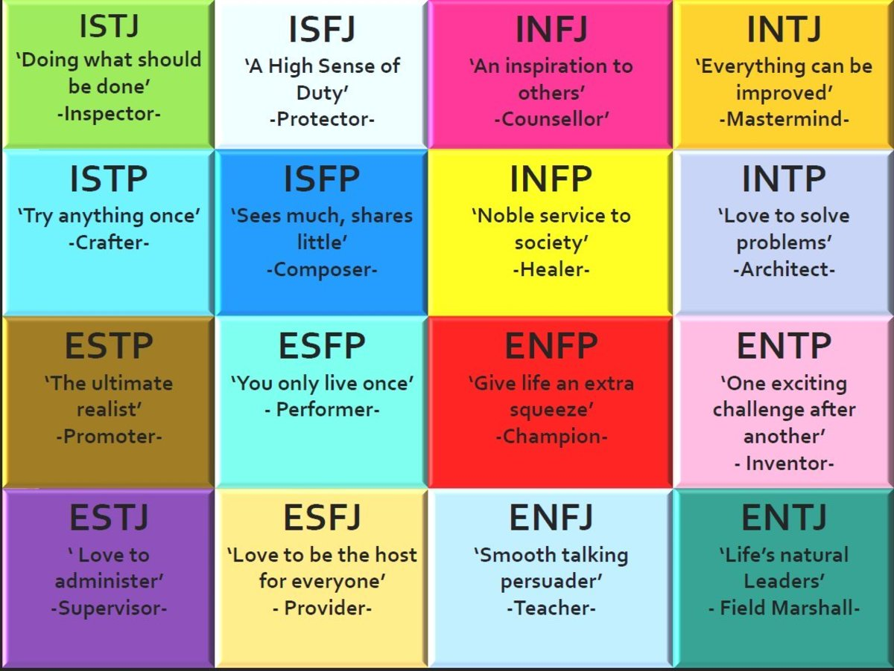
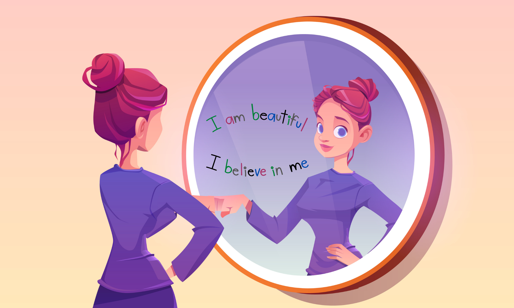

Bài test 40 câu giúp bạn xác định nhóm tính cách cơ bản (ISTJ, ENFP…). Tìm hiểu bài test MBTI là một trong các bước chúng ta hiểu bản thân hơn...
🔍 Khám phá bài test MBTI
Test gồm các tình huống giúp bạn nhận diện mức độ tự quan tâm, tự chấp nhận và ranh giới cá nhân.
🔍 Self-Care Quotient (SCQ)Test gồm các tình huống giúp bạn nhận diện mức độ tự quan tâm, tự chấp nhận và ranh giới cá nhân.
🔍 Self-Acceptance Index (SAI)Test gồm các tình huống giúp bạn nhận diện mức độ tự quan tâm, tự chấp nhận và ranh giới cá nhân.
🔍 Boundary Strength Scale (BSS)Giúp người dùng khám phá hệ giá trị cốt lõi của bản thân (ví dụ: tự do, trung thực, sáng tạo, kết nối…)..
🔍 Personal Values ExplorerGiúp người dùng khám phá mức độ gắn bó của bản thân với các mối quan hệ xung quanh
🔍 Mức độ gắn bó trong mqh
Khám phá thiên hướng nghề nghiệp của bạn dựa trên nhóm tính cách và đặc điểm hành vi trong các tình huống giả định của công cụ DISC.
🔍Khám phá bản thân theo DISCKhám phá thiên hướng nghề nghiệp của bạn dựa trên nhóm tính cách và đặc điểm hành vi trong các tình huống giả định của công cụ sinh trắc vân tay.
🔍Khám phá bản thân theo chủng vân tayBài test đánh giá khả năng nhận diện và xử lý cảm xúc như buồn, giận, lo âu... Gợi ý phương pháp chăm sóc tinh thần lành mạnh.
🔍EQ của bạn như thế nào?Bài test đánh giá khả năng nhận diện và xử lý cảm xúc như buồn, giận, lo âu... Gợi ý phương pháp chăm sóc tinh thần lành mạnh.
🔍Mức độ lo âu, trầm cảm?Bài test đánh giá khả năng nhận diện và xử lý cảm xúc như buồn, giận, lo âu... Gợi ý phương pháp chăm sóc tinh thần lành mạnh.
🔍Khả năng phục hồi sau tổn thương?Khám phá cảm xúc qua hình ảnh thiên nhiên, không gian
🔍Tìm hiểu cảm xúc trong bạn qua hình ảnh cảnh vật?Gợi mở tiềm thức và xu hướng tâm lý qua mô tả nhân vật
🔍Tìm hiểu cảm xúc trong bạn qua hình ảnh nhân vật bí ẩn?